waterflow.flow1d package¶
Submodules¶
waterflow.flow1d.flowFE1d module¶
One dimensional finite elements flow module
-
class
waterflow.flow1d.flowFE1d.Flow1DFE(id_, savepath='C:\Users\bramb\Documents\thesis\output')¶ Bases:
objectClass for solving flow problems numerically
This class represents an object that can be used to solve (un)saturated 1-dimensional flow problems using finite elements. To increase the accuracy of numerical solutions the Gaussian quadrature method is used for integration approximation.
Most of the methods applied on the object will change its internal state rather than returning a value. The change of the system is saved in any of its public attributes.
- Parameters
id_ (str) – Name of the model object.
savepath (str, optional) – Directory to which model data will be saved.
-
id_¶ Name of the model object.
- Type
str
-
savepath¶ Model’s save directory.
- Type
str
-
systemfluxfunc¶ Holds the selected flux function.
- Type
function
-
nodes¶ Nodal positions at which the system will be solved.
- Type
numpy.ndarray
-
nframe¶ Two dimensional array that contains the midpoints and the lengths of the nodal discretization in its columns respectively.
- Type
numpy.ndarray
-
lengths¶ The same data as in the seconds column of
nframebut in a different representation. This representation has the same length asnodeswhich is more convenient for certain forcing calculations at the nodal positions.- Type
numpy.ndarray
-
coefmatr¶ Square jacobian matrix used in the finite elements solution procedure. The exact dimension of the matrix is 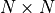.
- Type
numpy.ndarray
-
BCs¶ This contains the system’s boundary conditions. The keys that indicate the positions are “west” and “east”. The corresponding values have the following format:
(boundary_condition_value, type, domain_index).
- Type
dict
-
spatflux¶ Contains the spatial fluxes on the model domain. # !! explain form
- Type
dict
-
pointflux¶ Contains the point fluxes on the model domain. # !! explain form
- Type
dict
-
Spointflux¶ Contains state dependent point fluxes on the model domain. # !! explain form
- Type
dict
-
Sspatialflux¶ Contains state dependent spatial fluxes on the model domain. # !! explain form
- Type
dict
-
internal_forcing¶ The internal forcing of the system as calculated with
systemfluxfunc, using the selected Gaussian quadraturedegree.- Type
dict
-
forcing¶ All the forcing fluxes applied to the system. The dimension of this matrix is
![[1 \times N]](_images/math/12617a66745b1b5f689f3a466529a4c201e26bac.png) .
.- Type
numpy.ndarray
-
conductivities¶ pass
- Type
numpy.ndarray
-
moisture¶ pass
- Type
numpy.ndarray
-
isinitial¶ First object for which was solved.
- Type
bool, default is True
-
isconverged¶ The system has converged to a solution.
- Type
bool, default is False
-
solve_data¶ Holds the solve information of the system including the following key-value pairs:
solved_objects - A list of Flow1DFE objects at solved time steps.
time - A list of times at which the model states are calculated.
dt - A list of time step sizes between consecutive model solutions.
- iter - A list containing the number of iterations needed forconsecutive model solutions to converge.
- Type
dict
-
df_states¶ Current information about the static model solution.
- Type
pandas.core.frame.DataFrame
-
df_balance¶ Current static information about the water balance.
- Type
pandas.core.frame.DataFrame
-
df_balance_summary¶ Sum of the columns as saved in
df_balance.- Type
pandas.core.frame.DataFrame
-
dft_solved_times¶ Dataframe version of
solve_data.- Type
pandas.core.frame.DataFrame
-
dft_print_times¶ Objects that contain a solution to the model at specific times, calculated with
transient_dataframeify().- Type
pandas.core.frame.DataFrame
-
dft_states¶ Collection of all
df_statesdataframes for the times indft_solved_timesor atprint_timesif not None.- Type
dict
-
dft_nodes¶ Nodes that are selected in
transient_dataframeify()are saved atdft_solved_timesor atprint_timesif not None.- Type
dict
-
dft_balance¶ Collection of all
df_balancedataframes atdft_solved_timesor atprint_timesif not None.- Type
dict
-
dft_balance_summary¶ Collection of all
df_balance_summarydataframes atdft_solved_timesor atprint_timesif not None.- Type
pandas.core.frame.DataFrame
-
_west¶ Internal value that differentiates between a Dirichlet or Neumann boundary condition on the western side of the domain.
- Type
int
-
_east¶ Internal value that differentiates between a Dirichlet or Neumann boundary condition on the eastern side of the domain.
- Type
int
-
_delta¶ Fixed value used for the finite displacement in the derivatives of the jacobian matrix,
coefmatr. This value may be changed manually for extremeley steep gradients.- Type
float
-
gauss_degree¶ Degree or number of points used in the Gaussian quadrature procedure for integral approximation.
- Type
int
-
_xgauss¶ Roots of Legendre polynomial on the interval [0, 1] for the selected
gauss_degree.- Type
tuple
-
gaussquad¶ Combination of corresponding values of
_xgaussandwgaussinto a single data structure.- Type
list
-
xintegration¶ Absolute positions of the Gaussian quadrature points in the domain
nodes. The shape of this list is 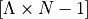.- Type
list
-
_CMAT(nodes, states)¶ Build the jacobian matrix
Build the complete jacobian matrix according to the finite elements scheme for the selected degree
 . The jacobian matrix
. The jacobian matrix
 is assigned to
is assigned to coefmatr.- Parameters
nodes (numpy.ndarray) – Array that contains the nodal positions.
states (numpy.ndarray) – Array that contains the states at the nodal positions.
Notes
The jacobian matrix
is build from three individual parts.(1)¶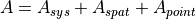
 , derivatives of the
, derivatives of the systemfluxfunc. , derivatives of functions in
, derivatives of functions in Sspatialflux. , derivatives of functions in
, derivatives of functions in Spointflux.
System’s flow equation jacobian
The derivatives of the systemflux function,
 , are collected
in . The equation below describes how the
derivatives are calculated in which the Gaussian quadrature scheme
is accounted for.
, are collected
in . The equation below describes how the
derivatives are calculated in which the Gaussian quadrature scheme
is accounted for.(2)¶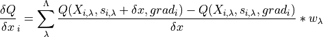
Argument 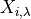 represents the absolute position of the Gaussian quadrature point as saved in
xintegration. The state argument 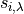 at this specific Gaussian quadrature point is calculated as follows:(3)¶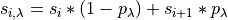
The third argument, 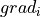, is the gradient of the state between the nodes of the current segment and is calculated as shown below:
(4)¶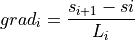
presents the structure of the sparse jacobian matrix
in which the derivatives of the systemflux function are
saved.(5)¶
![A_{sys} = \begin{bmatrix}
-\frac{\delta Q}{\delta x}_{i} & -\frac{\delta Q}{\delta x}_{i} & & & & \\
\frac{\delta Q}{\delta x}_{i} & \frac{\delta Q}{\delta x}_{i} -\frac{\delta Q}{\delta x}_{i+1} & -\frac{\delta Q}{\delta x}_{i+1} & & & \\
& \frac{\delta Q}{\delta x}_{i+1} & \frac{\delta Q}{\delta x}_{i+1} -\frac{\delta Q}{\delta x}_{i+2} & \ddots & & \\
& & \ddots & \ddots & & \ddots & \\
& & & \ddots & & \frac{\delta Q}{\delta x}_{N-1} -\frac{\delta Q}{\delta x}_{N} & -\frac{\delta Q}{\delta x}_{N} \\
& & & & & \frac{\delta Q}{\delta x}_{N} & \frac{\delta Q}{\delta x}_{N}
\end{bmatrix}](_images/math/8d13da7bdfe9bc304ce0b5d0eb379dc877fb731a.png)
Spatial state dependent jacobian
The derivatives of the state dependent spatial fluxes
 , if
present, are collected in . The calculation of these
derivatives is described by the equations below. The values are summed
at every segment in the model domain, taking into account the selected
Gaussian quadrature scheme.
, if
present, are collected in . The calculation of these
derivatives is described by the equations below. The values are summed
at every segment in the model domain, taking into account the selected
Gaussian quadrature scheme.(6)¶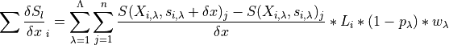
(7)¶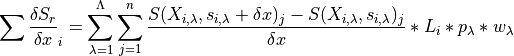
Argument represents the absolute position of the Gaussian quadrature point as saved in
xintegration. The state argument at this specific Gaussian quadrature point is calculated as follows:(8)¶
The structure of the sparse jacobian matrix,
, of the
sum of all state dependent spatialflux functions is shown below:(9)¶
![A_{spat} = \begin{bmatrix}
\Sigma \frac{\delta S_{l}}{\delta x}_{i} & \Sigma \frac{\delta S_{r}}{\delta x}_{i} & & & & \\
\Sigma \frac{\delta S_{l}}{\delta x}_{i} & \Sigma \frac{\delta S_{r}}{\delta x}_{i} + \Sigma \frac{\delta S_{l}}{\delta x}_{i+1} & \Sigma \frac{\delta S_{r}}{\delta x}_{i+1} & & & \\
& \Sigma \frac{\delta S_{l}}{\delta x}_{i+1} & \Sigma \frac{\delta S_{r}}{\delta x}_{i+1} + \Sigma \frac{\delta S_{l}}{\delta x}_{i+2} & \ddots & & \\
& & \ddots & \ddots & & \ddots & \\
& & & \ddots & & \Sigma \frac{\delta S_{r}}{\delta x}_{N-1} + \Sigma \frac{\delta S_{l}}{\delta x}_{N} & \Sigma \frac{\delta S_{r}}{\delta x}_{N} \\
& & & & & \Sigma \frac{\delta S_{l}}{\delta x}_{N} & \Sigma \frac{\delta S_{r}}{\delta x}_{N}
\end{bmatrix}](_images/math/0a31ab6fadd6e2abd11dff7fde03e2c87bba4070.png)
Point state dependent jacobian
The derivatives of the state dependend point fluxes,
 , if
present, are collected in . The derivates are
calculated for the specific functions, distributed to the two nearest
nodes and summed to a total at this specific position. This is
described by the equations below:
, if
present, are collected in . The derivates are
calculated for the specific functions, distributed to the two nearest
nodes and summed to a total at this specific position. This is
described by the equations below:(10)¶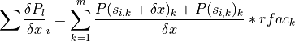
(11)¶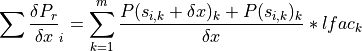
The state argument, 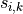, is calculated by linear interpolation between the nearest nodes.
(12)¶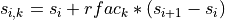
The structure of the jacobian matrix,
, of the sum of
all state dependent pointflux functions is shown below:(13)¶

-
_FE_precalc()¶ Discretization dependent finite element scheme properties
Calculate the values for
nframeandlengths.Examples
pass
-
__repr__()¶ Representation of the object as shown to the user
-
_aggregate_forcing()¶ Aggregation of state independent forcing
-
_calc_theta_k()¶
-
_check_boundaries()¶ Check for proper boundary conditions
The system is checked for singularity. When a boundary condition is not set explicitly a natural boundary condition (no flow) is set as default.
- Raises
numpy.linalg.LinAlgError – This error is raised if the system has infinitely many solutions as a consequence of two Neumann boundary conditions or when none are entered.
Examples
>>> from waterflow.flow1d.flowFE1d import Flow1DFE >>> FE = Flow1DFE("Check boundaries") >>> FE.set_field1d((-10, 0, 11)) >>> FE.add_neumann_BC(-0.3, "west") >>> FE.BCs {'west': (-0.3, 'Neumann', 0)} >>> FE._check_boundaries() Traceback (most recent call last): ... numpy.linalg.LinAlgError: Singular matrix >>> FE.add_dirichlet_BC(-100, "west") >>> FE.BCs {'west': (-100, 'Dirichlet', 0)} >>> FE._check_boundaries() >>> FE.BCs {'west': (-100, 'Dirichlet', 0), 'east': (0, 'Neumann', -1)}
-
_internal_forcing(calcflux=False, calcbal=False)¶ Calculate the system’s internal forcing
This is a core method for the numerical finite elements scheme. The default behavior is to calculate the system’s internal forcing and assign the values to
forcing.- Parameters
calcflux (bool, default is False) – If
True, fluxes through the nodes are calculated and saved influxes.calcbal (bool, default = False) – If
True, internal forcing is saved ininternal_forcinginstead offorcing.
Notes
This mathematical description of the internal forcing calculation describes how the forcing at the nodes is calculated. The direction of flow is defined to be positive to the right. The equation below describes how the forcing at a specific node can be calculated, taking the Gaussian quadrature procedure into account.
(14)¶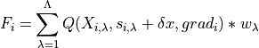
Argument represents the absolute position of the Gaussian quadrature point as saved in
xintegration. The state argument at this specific Gaussian quadrature point is calculated as follows:(15)¶
The third argument, , is the gradient of the state between the nodes of the current segment and is calculated as shown below:
(16)¶
All internal fluxes are collected in
 .
.(17)¶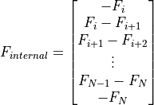
Note
If both of the arguments are truthy, the argument which occurs in the method signature first has highest precedence. The internal forcing is only assigned to the
forcingattribute when called with default arguments.Examples
>>> from waterflow.flow1d.flowFE1d import Flow1DFE >>> from waterflow.utility import conductivityfunctions as condf >>> from waterflow.utility.fluxfunctions import richards_equation >>> from waterflow.utility.helper import initializer
Select soil 13, ‘loam’, from De Staringreeks [SW79] and prepare the conductivity function with the soil parameters.
>>> s, *_ = condf.soilselector([13])[0] >>> kfun = initializer(condf.VG_conductivity, ksat=s.ksat, a=s.alpha, n=s.n)
Add states for a stationary no flow situation and check the
forcingattribute for the internal forcing values.>>> FE = Flow1DFE("Internal forcing example") >>> FE.set_systemfluxfunction(richards_equation, kfun=kfun) >>> FE.set_field1d(nodes=(-10, 0, 11)) >>> FE.set_initial_states([-1 * i for i in range(11)]) >>> FE.set_gaussian_quadrature(3) >>> FE._internal_forcing() >>> FE.forcing array([0., 0., 0., 0., 0., 0., 0., 0., 0., 0., 0.]) >>> FE._internal_forcing(calcflux=True) >>> FE.fluxes array([0., 0., 0., 0., 0., 0., 0., 0., 0., 0., 0.])
Both arrays should consist of zeros because of the applied equilibrium situation with no flow over the boundaries.
-
_solve_initial_object()¶
-
_statedep_forcing()¶
-
_update_storage_change(prevstate, dt)¶ feed new previous states function and timestep
-
add_dirichlet_BC(value, where)¶ Set boundary condition with fixed state
The Dirichlet boundary condition is implemented with this method. The boundary condition is saved in
BCs.- Parameters
value (int or float) – State value of the specific boundary
where (str) – Position where the boundary condition will be set. Choose from “west”, “left”, “down”, “east”, “right” or “up”. This argument is case insensitive.
Notes
Describe how the boundary condition is implemented. !!!!!!!!!!!!!
Examples
>>> from waterflow.flow1d.flowFE1d import Flow1DFE >>> FE = Flow1DFE("Dirichlet boundary conditions") >>> FE.set_field1d((-10, 0, 11)) >>> FE.BCs {} >>> FE.add_dirichlet_BC(-100, "Up") >>> FE.add_dirichlet_BC(0, "Down") >>> FE.BCs {'east': (-100, 'Dirichlet', -1), 'west': (0, 'Dirichlet', 0)}
Note
Note that a new boundary condition will overwrite an existing one without a warning.
-
add_neumann_BC(value, where)¶ Set boundary condition with fixed flux
The Neumann boundary condition is implemented with this method. The boundary condition is saved in
BCs.- Parameters
value (int or float) – Flux value of the specific boundary
where (str) – Position where the boundary condition will be set. Choose from “west”, “left”, “down”, “east”, “right” or “up”. This argument is case insensitive.
Notes
Describe how the boundary condition is implemented. !!!!!!!!!!!!! also note that FE.set_field1d needs to be called for the _east attr
Examples
>>> from waterflow.flow1d.flowFE1d import Flow1DFE >>> FE = Flow1DFE("Neumann boundary conditions") >>> FE.set_field1d((-10, 0, 11)) >>> FE.BCs {} >>> FE.add_neumann_BC(-0.1, "right") >>> FE.BCs {'east': (-0.1, 'Neumann', -1)} >>> FE.add_neumann_BC(-0.5, "up") >>> FE.BCs {'east': (-0.5, 'Neumann', -1)} >>> FE.add_neumann_BC(-0.8, "West") >>> FE.BCs {'east': (-0.5, 'Neumann', -1), 'west': (-0.8, 'Neumann', 0)}
Note
Note that a new boundary condition will overwrite an existing one without a warning. This method will allow both boundaries to be of type Neumann but remember that this won’t be useful because of the infinite amount of solutions in such a situation.
-
add_pointflux(rate, pos, name=None)¶ Add a pointflux to the system
Notes
Describe the calculation of
 and
and  here.
here.Examples
-
add_spatialflux(q, name=None, exact=False)¶
-
calcbalance(print_=False, invert=True)¶ Calculate the water balance for the system
The water balance values are calculated at every position in the domain and will be saved to
df_balance. The summary of the water balance, which is the sum of all relevant columns, is saved indf_balance_summary.- Parameters
print_ (bool, default is
False) – Printdf_balance_summaryto the console.invert (bool, default is
True) – Mirrordf_balancew.r.t. the x-axis.
Notes
The external fluxes,
 , are the sum of all point
and spatial fluxes.
, are the sum of all point
and spatial fluxes.(18)¶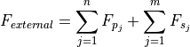
The calculation of the point flux, 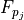, depends on its nature. If the point flux depends on position only, the accumulation is straightforward. When the point flux is dependend on the state of the the system, the distribution towards the surrounding nodes needs to be calculated before values can be accumulated to its total. The distribution to the nearest nodes is calculated as follows:
(19)¶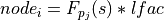
(20)¶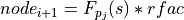
where
 equals the state at the position of the point flux
which is calculated by linear interpolation. The calculation of the
fractions, that distribute the flux, and
are described in
equals the state at the position of the point flux
which is calculated by linear interpolation. The calculation of the
fractions, that distribute the flux, and
are described in add_pointflux().For the calculation of the spatial flux, 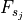, a similar distinction exists. If the spatial flux is not dependend on state, straightforward addition takes place. When there is a state dependency, distributions towards the nodes is calculated as described in
_internal_forcing()where 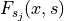 is substituted for thesystemfluxfunc . This calculation accounts for the selected
. This calculation accounts for the selected
gauss_degreeand the state argument is linearly
interpolated between the neareast nodes.The internal forcing in the water balance is the sum of the internal forcing as described in
_internal_forcing()and the external forcing.(21)¶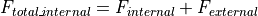
The top and bottom values in 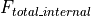 are corrected for the flow over the boundaries. The flow over the boundaries is calculated as the difference of -
 at those boundary nodes.
at those boundary nodes.The net flux is calculated as follows:
(22)¶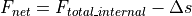
Where
represents the storage change between
iterations at every node in the domain.Note
Although the storage change
is entered into the
model as an external flux, in the calculation of the water balance
this term is handled as a separate flux which is not included in
the term.Examples
>>> from waterflow.flow1d.flowFE1d import Flow1DFE >>> from waterflow.utility import conductivityfunctions as condf >>> from waterflow.utility import fluxfunctions as fluxf >>> from waterflow.utility.helper import initializer
Select soil 13, ‘loam’, from De Staringreeks [SW79] and prepare the conductivity function and theta-h relation with the soil parameters. These functions are the arguments to the fluxfunction and the storage change function repectively.
>>> s, *_ = condf.soilselector([13])[0] >>> theta_h = initializer(condf.VG_pressureh, theta_r=s.t_res, ... theta_s=s.t_sat, a=s.alpha, n=s.n) >>> kfun = initializer(condf.VG_conductivity, ksat=s.ksat, a=s.alpha, n=s.n) >>> storage_change = initializer(fluxf.storage_change, fun=theta_h)
>>> FE = Flow1DFE("Calculate water balance") >>> FE.set_systemfluxfunction(fluxf.richards_equation, kfun=kfun) >>> FE.set_field1d(nodes=(-10, 0, 11)) >>> FE.add_dirichlet_BC(0.0, 'west') >>> # Constant boundary flow of 0.3 cm/d out of the system >>> FE.add_neumann_BC(-0.3, 'east') >>> # theta_h function needs to be added manually to be included in the water balance >>> FE.tfun = theta_h >>> # Extraction of 0.001 cm/d over the complete domain >>> FE.add_spatialflux(-0.001, 'extraction') >>> # Add storage change function >>> FE.add_spatialflux(storage_change) >>> # Solve the system for one time step (dt=0.01 d) >>> iters = FE.dt_solve(dt=0.01) >>> FE.calcbalance() >>> FE.df_balance nodes spat-extraction storage_change internal all-spatial all-points all-external net fluxes 0 0.0 -0.0005 0.144730 -0.144730 -0.0005 0.0 -0.0005 0.000000e+00 0.155770 1 -1.0 -0.0010 0.266555 -0.266555 -0.0010 0.0 -0.0010 -4.663325e-12 -0.109784 2 -2.0 -0.0010 0.222706 -0.222706 -0.0010 0.0 -0.0010 -2.797818e-12 -0.331490 3 -3.0 -0.0010 0.182558 -0.182558 -0.0010 0.0 -0.0010 -6.783463e-14 -0.513048 4 -4.0 -0.0010 0.145754 -0.145754 -0.0010 0.0 -0.0010 1.635247e-12 -0.657801 5 -5.0 -0.0010 0.112096 -0.112096 -0.0010 0.0 -0.0010 1.979528e-12 -0.768897 6 -6.0 -0.0010 0.081552 -0.081552 -0.0010 0.0 -0.0010 1.637579e-12 -0.849449 7 -7.0 -0.0010 0.054287 -0.054287 -0.0010 0.0 -0.0010 1.292744e-12 -0.902736 8 -8.0 -0.0010 0.030765 -0.030765 -0.0010 0.0 -0.0010 1.127098e-12 -0.932501 9 -9.0 -0.0010 0.012078 -0.012078 -0.0010 0.0 -0.0010 1.573075e-12 -0.943580 10 -10.0 -0.0005 0.002068 -0.002068 -0.0005 0.0 -0.0005 0.000000e+00 -0.945148 >>> FE.df_balance_summary spat-extraction -1.000000e-02 storage_change 1.255148e+00 internal -1.255148e+00 all-spatial -1.000000e-02 all-points 0.000000e+00 all-external -1.000000e-02 net 1.716294e-12 dtype: float64
-
dataframeify(invert)¶ Write current static model to dataframe
Save the current model results to
df_states.- Parameters
invert (bool) – Mirror
df_statesw.r.t. the x-axis.
Notes
At least, lengths, nodes, states and the internal forcing are written to the dataframe.
Examples
>>> from waterflow.flow1d.flowFE1d import Flow1DFE >>> from waterflow.utility import conductivityfunctions as condf >>> from waterflow.utility import fluxfunctions as fluxf >>> from waterflow.utility.helper import initializer
Select soil 13, ‘loam’, from De Staringreeks [SW79] and prepare the conductivity function and theta-h relation with the soil parameters. These functions are the arguments to the fluxfunction and the storage change function repectively.
>>> s, *_ = condf.soilselector([13])[0] >>> theta_h = initializer(condf.VG_pressureh, theta_r=s.t_res, ... theta_s=s.t_sat, a=s.alpha, n=s.n) >>> kfun = initializer(condf.VG_conductivity, ksat=s.ksat, a=s.alpha, n=s.n) >>> storage_change = initializer(fluxf.storage_change, fun=theta_h)
>>> FE = Flow1DFE("static df_states dataframe") >>> FE.set_systemfluxfunction(fluxf.richards_equation, kfun=kfun) >>> FE.set_field1d(nodes=(-10, 0, 11)) >>> FE.add_dirichlet_BC(0.0, 'west') >>> # Constant boundary flow of 0.3 cm/d out of the system >>> FE.add_neumann_BC(-0.3, 'east') >>> # theta_h add manually to be included in the dataframe >>> FE.tfun = theta_h >>> # Add storage change function >>> FE.add_spatialflux(storage_change) >>> # Solve the system for one time step (dt=0.01 d) >>> iters = FE.dt_solve(dt=0.01) >>> FE.dataframeify(invert=True) >>> FE.df_states lengths nodes states moisture conductivities storage_change internal_forcing 0 0.5 0.0 -9.304032 0.416865 5.936014 0.144618 0.155382 1 1.0 -1.0 -8.278454 0.417344 6.220225 0.266340 -0.266340 2 1.0 -2.0 -7.295883 0.417781 6.519720 0.222509 -0.222509 3 1.0 -3.0 -6.345835 0.418182 6.840203 0.182383 -0.182383 4 1.0 -4.0 -5.419426 0.418549 7.189191 0.145605 -0.145605 5 1.0 -5.0 -4.509093 0.418885 7.577188 0.111975 -0.111975 6 1.0 -6.0 -3.608378 0.419190 8.020009 0.081460 -0.081460 7 1.0 -7.0 -2.711757 0.419462 8.544065 0.054224 -0.054224 8 1.0 -8.0 -1.814469 0.419698 9.201041 0.030729 -0.030729 9 1.0 -9.0 -0.912220 0.419888 10.126956 0.012064 -0.012064 10 0.5 -10.0 0.000000 0.420000 12.980000 0.002066 0.951906
-
dt_solve(dt, maxiter=500, threshold=0.001)¶ solve the system for one specific time step
-
remove_BC(*args)¶ Remove boundary conditions
Calling this method with default arguments will clear all boundary conditions set. To clear a specific boundary condition the name needs to be passed explicitly.
- Parameters
*args (str, optional.) – The positional arguments should contain the name of the boundary conditions as saved in
BCs. This can be “west” or “east”.- Raises
KeyError – This exception is raised when
*argscontains an invalid boundary condition name.. note:: – This is the safe way to remove the boundary conditions because it will also handle and reset the
_westand_eastattributes which are associated with the implementation of the boundary conditions in the numerical scheme.
Examples
>>> from waterflow.flow1d.flowFE1d import Flow1DFE >>> FE = Flow1DFE("Boundary condition removal") >>> FE.set_field1d((-10, 0, 11)) >>> FE.add_dirichlet_BC(-100, "up") >>> FE.add_neumann_BC(0.0, "down") >>> FE.BCs {'east': (-100, 'Dirichlet', -1), 'west': (0.0, 'Neumann', 0)} >>> FE.remove_BC("right") Traceback (most recent call last): ... KeyError: 'No boundary named right.' >>> FE.remove_BC("west") >>> FE.BCs {'east': (-100, 'Dirichlet', -1)} >>> FE.remove_BC() >>> FE.BCs {}
-
remove_pointflux(*args)¶
-
remove_spatialflux(*args)¶
-
save(savepath=None, dirname=None)¶ Save model data to disk
The transient dataframes created with
transient_dataframeify()and the model summary as created withsummary()will be saved to disk by this method.- Parameters
savepath (
str, default isOUTPUT_DIR) – A base path to which runs will be saved.dirname (
str, default is a chronological name) – Name of save directory that is appended to savepath.
Notes
All dataframes of the form
dft_<name>, if populated, are written to disk in a .xlsx extension. The model summary is saved asid_with a .txt extension.Warning
Data that already exists in the target directory will be overwritten with new data. Prevent this by selecting a new directory name or set
dirname=Noneto automatically generate a chronological directory name which is always unique.
-
set_field1d(nodes, degree=1)¶ Initialize the system’s discretization
statesandforcingare initialized with zeros. The Gaussian quadraturegauss_degreeis set and the system’s discretization characteristics are calculated with_FE_precalc().- Parameters
nodes (tuple or list or numpy.ndarray) – A tuple of the form (start, end, number of nodes) for a linearly spaced domain or a sequence of nodes that contains the nodal positions explicitly.
degree (int, default is 1) – Set the Gaussian quadrature degree, this is equivalent to the
set_gaussian_quadrature()method.
Notes
Warning
Make sure that the absolute positions of the nodes increase towards the right of the domain.
Examples
>>> from waterflow.flow1d.flowFE1d import Flow1DFE >>> from waterflow.utility.spacing import biasedspacing
Linear nodal spacing with a non-default Gaussian degree.
>>> FE = Flow1DFE("Several spacings") >>> FE.set_field1d((-10, 0, 11), degree=3) >>> FE.nodes array([-10., -9., -8., -7., -6., -5., -4., -3., -2., -1., 0.]) >>> FE._xgauss (0.1127016653792583, 0.5, 0.8872983346207417)
Unstructured nodes using the
biasedspacing()function.>>> unstructured_nodes = biasedspacing(numnodes=11, power=4, lb=-1, rb=0, maxdist=2, length=10) >>> FE.set_field1d(unstructured_nodes) >>> FE.nodes array([-10. , -9.61405656, -9.29864794, -8.94730706, -8.54868046, -8.0844499 , -7.12803197, -6. , -4. , -2. , 0. ])
-
set_gaussian_quadrature(degree=1)¶ Calculates Gaussian quadrature roots and weights
The values calculated with this method are stored in the object’s
_xgaussand_wgaussattributes. The absolute positions of the Gaussian quadrature points in the ~domain are calculated and saved in ~xintegration`.- Parameters
degree (int, default is 1) – Number of points used in the Gaussian quadrature procedure.
Notes
(23)¶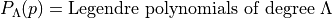
(24)¶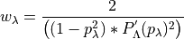
See [SW79] for an introduction to stylish blah, blah…
-
set_initial_states(states)¶ Set the initial states
Although the main purpose of this method is to set the initial states it can be used to manipulate the states at any given point in time. The states are written to
states.- Parameters
states (int or float or list or numpy.ndarray) – Set the states to an uniform value or vary the states with a sequence like argument.
Notes
Note
Note that the states can only be set when the discretization of the system is known.
Examples
Set the initial states of the system or use the default setting.
>>> from waterflow.flow1d.flowFE1d import Flow1DFE >>> FE = Flow1DFE("Setting states") >>> FE.set_field1d((-10, 0, 11)) >>> FE.states array([0., 0., 0., 0., 0., 0., 0., 0., 0., 0., 0.]) >>> FE.set_initial_states([-1 * i for i in range(11)]) >>> FE.states array([ 0., -1., -2., -3., -4., -5., -6., -7., -8., -9., -10.])
-
set_systemfluxfunction(function, **kwargs)¶ Implement the governing flow equation
The
systemfluxfuncis set with the governing flow equation.- Parameters
function (func) – Flow equation that takes position, state and gradient as its arguments respectively.
**kwargs (keyword arguments) – Extra arguments for the flow equation which are implemented as defaults so that the calling signature of the flow equation remains the same.
Examples
>>> from waterflow.flow1d.flowFE1d import Flow1DFE >>> from waterflow.utility import fluxfunctions as fluxf >>> from waterflow.utility import conductivityfunctions as condf >>> from waterflow.utility.helper import initializer
Implement the Richards equation for unsturated flow, herein the Van Genuchten conductivity function is used. [SW79]. Soil 13, ‘loam’, from De Staringreeks [SW79] is selected. See
richards_equation()for the full definition of the fluxfunction.>>> s, *_ = condf.soilselector([13])[0] >>> kfun = initializer(condf.VG_conductivity, ksat=s.ksat, a=s.alpha, n=s.n) >>> richards = fluxf.richards_equation >>> FErichard = Flow1DFE("Flow equations") >>> FErichard.set_systemfluxfunction(richards, kfun=kfun)
For saturated flow the Darcy equation with a constant saturated conductivity can be used. [SW79]. See
darcy()for the full definition of the fluxfunction.>>> darcy = fluxf.darcy >>> FEdarcy = Flow1DFE("Flow equations") >>> FEdarcy.set_systemfluxfunction(darcy, ksat=s.ksat)
-
solve(dt=0.001, dt_min=1e-05, dt_max=0.5, end_time=1, maxiter=500, dtitlow=1.5, dtithigh=0.5, itermin=5, itermax=10, threshold=0.001, verbosity=True)¶ solve the system for a given period of time
-
states_to_function()¶ Prepare one-dimensional interpolation function
One-dimensional piecewise linearly interpolated function which returns the system’s states and is continiously defined on the domain
nodes.- Returns
Function that calculates the system’s states for a given position.
- Return type
functools.partial
Notes
The main purpose of this method is to allow for Gaussian quadrature calculations which require state values at specific positions between the system’s
nodes. This method also provides a tool for plotting at arbitrary positions within the domain.Examples
>>> from waterflow.flow1d.flowFE1d import Flow1DFE >>> FE = Flow1DFE("Continiously defined states") >>> FE.set_field1d((-10, 0, 11)) >>> FE.set_initial_states([-1 * i for i in range(11)]) >>> continious_states = FE.states_to_function() >>> # On a boundary node >>> continious_states(0) -10.0 >>> # In between two nodes >>> continious_states(-8.5) -1.5 >>> # multiple results at once >>> continious_states([-0.2 * i for i in range(6)]) array([-10. , -9.8, -9.6, -9.4, -9.2, -9. ])
Warning
Be aware that the function does not raise an exception but returns the value of the nearest boundary when a position outside of the domain is given as argument.
-
summary(show=True, save=False, path=None)¶ Description of the object
Subsequent calls will update the model description if adaptations to the model were made.
- Parameters
show (bool, default is True) – Print object description to the console.
save (bool, default is False) – Save object description to disk.
path (str, default is None) – Full path of a directory to which will be saved. This argument is mandatory if
save=True.
Notes
The description of the model is saved as
id_with a`.txt` extension. The string version of the description is also available viasummarystring.Examples
>>> from waterflow.flow1d.flowFE1d import Flow1DFE >>> from waterflow.utility import conductivityfunctions as condf >>> from waterflow.utility import fluxfunctions as fluxf >>> from waterflow.utility.helper import initializer
Select soil 13, ‘loam’, from De Staringreeks [SW79] and prepare the conductivity function and theta-h relation with the soil parameters. These functions are the arguments to the fluxfunction and the storage change function repectively.
>>> s, *_ = condf.soilselector([13])[0] >>> theta_h = initializer(condf.VG_pressureh, theta_r=s.t_res, ... theta_s=s.t_sat, a=s.alpha, n=s.n) >>> kfun = initializer(condf.VG_conductivity, ksat=s.ksat, a=s.alpha, n=s.n) >>> storage_change = initializer(fluxf.storage_change, fun=theta_h)
>>> FE = Flow1DFE("static df_states dataframe") >>> FE.set_field1d(nodes=(-10, 0, 11)) >>> FE.set_systemfluxfunction(fluxf.richards_equation, kfun=kfun) >>> FE.add_dirichlet_BC(0.0, 'west') >>> # Constant boundary flow of 0.3 cm/d out of the system >>> FE.add_neumann_BC(-0.3, 'east') >>> # theta_h add manually to be included in the dataframe >>> FE.tfun = theta_h >>> # add spatial flux >>> FE.add_spatialflux(-0.001, 'extraction') >>> # Add storage change function >>> FE.add_spatialflux(storage_change) >>> # Solve the system for one time step (dt=0.01 d) >>> iters = FE.dt_solve(dt=0.01) >>> FE.summary() Id: static df_states dataframe System length: 10.0 Number of nodes: 11 Gauss degree: 1 kfun: VG_conductivity tfun: VG_pressureh BCs: west value: 0.0 and of type Dirichlet, east value: -0.3 and of type Neumann Spatflux: extraction, storage_change spat-extraction -1.000000e-02 storage_change 1.255148e+00 internal -1.255148e+00 all-spatial -1.000000e-02 all-points 0.000000e+00 all-external -1.000000e-02 net 1.716294e-12
-
transient_dataframeify(print_times=None, include_maxima=True, nodes=None, invert=True)¶ Combine the static dataframes to a transient collection
This method will build the following dataframes:
dft_solved_times(),dft_states,dft_balance,dft_balance_summary.Generation of
dft_print_timesanddft_nodesdepends on theprint_timesandnodesarguments.- Parameters
print_times (int, list or numpy.ndarray) – Number of linearly spaced print times, or sequence of specific print times.
include_maxima (bool) – Include both endpoints in the dataframe.
nodes (list or numpy.ndarray) – Positional values of the nodes that will be tracked over time.
invert (bool) – Mirror the built dataframes w.r.t. the x-axis.
Notes
The default behaviour is to generate the dataframes for the times at which the model has been solved. These times are selected by the
solve()method and saved indft_solved_times. Whenprint_times != None, the collection of the static dataframes will be built at the new print times. This requires the model to calculate new model objects. The calculations are done from the nearest known object that was solved for in terms of time (dft_solved_times) and will be saved indft_print_times.Examples
>>> from waterflow.flow1d.flowFE1d import Flow1DFE >>> from waterflow.utility import conductivityfunctions as condf >>> from waterflow.utility import fluxfunctions as fluxf >>> from waterflow.utility.helper import initializer
Select soil 13, ‘loam’, from De Staringreeks [SW79] and prepare the conductivity function and theta-h relation with the soil parameters. These functions are the arguments to the fluxfunction and the storage change function repectively.
>>> s, *_ = condf.soilselector([13])[0] >>> theta_h = initializer(condf.VG_pressureh, theta_r=s.t_res, ... theta_s=s.t_sat, a=s.alpha, n=s.n) >>> kfun = initializer(condf.VG_conductivity, ksat=s.ksat, a=s.alpha, n=s.n) >>> storage_change = initializer(fluxf.storage_change, fun=theta_h)
>>> FE = Flow1DFE("All transient dataframes") >>> FE.set_systemfluxfunction(fluxf.richards_equation, kfun=kfun) >>> FE.set_field1d(nodes=(-100, 0, 11)) >>> FE.add_dirichlet_BC(0.0, 'west') >>> # Constant boundary flow of 0.3 cm/d out of the system >>> FE.add_neumann_BC(-0.3, 'east') >>> # theta_h add manually to be included in the dataframe >>> FE.tfun = theta_h >>> # Extraction of 0.001 cm/d over the complete domain >>> FE.add_spatialflux(-0.001, 'extraction') >>> # Add storage change function >>> FE.add_spatialflux(storage_change) >>> FE.solve(end_time=5, verbosity=False) >>> FE.transient_dataframeify(nodes=[0, -2, -5, -8, -10]) >>> # returns None because it is empty >>> FE.dft_print_times
>>> FE.dft_solved_times.head() solved_objects time dt iter 0 Flow1DFE(All transient dataframes) 0.00000 NaN NaN 1 Flow1DFE(All transient dataframes) 0.00100 0.00100 7.0 2 Flow1DFE(All transient dataframes) 0.00200 0.00100 3.0 3 Flow1DFE(All transient dataframes) 0.00350 0.00150 3.0 4 Flow1DFE(All transient dataframes) 0.00575 0.00225 3.0
>>> # access transient data from the top node >>> FE.dft_nodes[0] time lengths nodes states moisture conductivities extraction storage_change internal_forcing 0 0.000000 5.0 0.0 0.000000 0.420000 12.980000 -0.005 0.000000 -12.980000 1 0.001000 5.0 0.0 -6.230996 0.418228 6.881334 -0.005 4.413886 -4.108886 2 0.002000 5.0 0.0 -8.525052 0.417231 6.149441 -0.005 3.381237 -3.076237 3 0.003500 5.0 0.0 -10.769689 0.416145 5.570882 -0.005 2.713307 -2.408307 4 0.005750 5.0 0.0 -13.147704 0.414894 5.058867 -0.005 2.213596 -1.908596 5 0.009125 5.0 0.0 -15.759044 0.413423 4.583379 -0.005 1.816135 -1.511135 6 0.014188 5.0 0.0 -18.682582 0.411673 4.131618 -0.005 1.490460 -1.185460 7 0.021781 5.0 0.0 -21.992779 0.409584 3.698174 -0.005 1.219763 -0.914763 8 0.033172 5.0 0.0 -25.766774 0.407089 3.281456 -0.005 0.993457 -0.688457 9 0.050258 5.0 0.0 -30.088421 0.404117 2.882094 -0.005 0.804074 -0.499074 10 0.075887 5.0 0.0 -35.050660 0.400591 2.502107 -0.005 0.645821 -0.340821 11 0.114330 5.0 0.0 -40.755672 0.396435 2.144426 -0.005 0.513876 -0.208876 12 0.171995 5.0 0.0 -47.311047 0.391582 1.812568 -0.005 0.404104 -0.099104 13 0.258493 5.0 0.0 -54.818914 0.385985 1.510322 -0.005 0.312974 -0.007974 14 0.388239 5.0 0.0 -63.353249 0.379645 1.241351 -0.005 0.237546 0.067454 15 0.582859 5.0 0.0 -72.918234 0.372640 1.008723 -0.005 0.175458 0.129542 16 0.874788 5.0 0.0 -83.379449 0.365167 0.814411 -0.005 0.124874 0.180126 17 1.312682 5.0 0.0 -94.367200 0.357578 0.658911 -0.005 0.084417 0.220583 18 1.812682 5.0 0.0 -103.335192 0.351603 0.559141 -0.005 0.058055 0.246945 19 2.312682 5.0 0.0 -109.947478 0.347330 0.497676 -0.005 0.041411 0.263589 20 2.812682 5.0 0.0 -114.891068 0.344208 0.457272 -0.005 0.030168 0.274832 21 3.312682 5.0 0.0 -118.614160 0.341899 0.429578 -0.005 0.022269 0.282730 22 3.812682 5.0 0.0 -121.429531 0.340177 0.410046 -0.005 0.016582 0.288417 23 4.312682 5.0 0.0 -123.563493 0.338885 0.395994 -0.005 0.012421 0.292579 24 4.812682 5.0 0.0 -125.183260 0.337912 0.385736 -0.005 0.009343 0.295657 25 5.000000 5.0 0.0 -125.727039 0.337587 0.382369 -0.005 0.008330 0.296670
>>> # Revert to initial model state >>> FE.set_initial_states(0.0) >>> FE.solve(end_time=5, verbosity=False) >>> # 5 linearly spaced print times >>> FE.transient_dataframeify(nodes=[0, -2, -5, -8, -10], print_times=5) >>> FE.dft_nodes[0] time lengths nodes states moisture conductivities extraction storage_change internal_forcing 0 0.00 5.0 0.0 0.000000 0.420000 12.980000 -0.005 0.008330 0.296670 1 1.25 5.0 0.0 -93.203885 0.358368 0.673469 -0.005 0.088281 0.216719 2 2.50 5.0 0.0 -112.163382 0.345923 0.479024 -0.005 0.036331 0.268668 3 3.75 5.0 0.0 -121.156173 0.340343 0.411892 -0.005 0.017130 0.287870 4 5.00 5.0 0.0 -125.727039 0.337587 0.382369 -0.005 0.008330 0.296670
>>> FE.dft_print_times solved_objects time 0 Flow1DFE(All transient dataframes) 0.00 1 Flow1DFE(All transient dataframes) 1.25 2 Flow1DFE(All transient dataframes) 2.50 3 Flow1DFE(All transient dataframes) 3.75 4 Flow1DFE(All transient dataframes) 5.00
-
wrap_bf_linear(node, where)¶